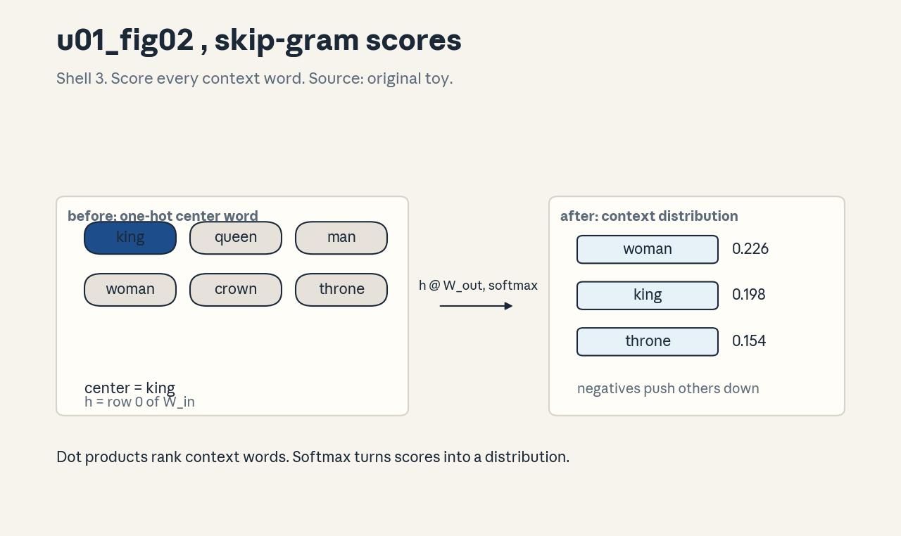

U01 · NLP to transformer foundations
U01 , NLP to transformer foundations
Prerequisites: P03, P05, P06, P11, P13. Bridge links in
../prerequisites.md.
Lecture anchor: L1 (Sep 25, 2026). Claim class: OFFICIAL-SYLLABUS for
all 12 concepts. All leaves: PLANNED / SOURCE ATTRIBUTION PENDING until
slide or transcript extraction verifies them.
Notation: see ../notation_and_shapes.md. Glossary: ../glossary.md.
Not yet understood
Concepts this unit uses but does not teach. Each one arrives in a later unit.
- Attention internals (U02): how scores become weights at scale.
- Positional encodings (U02): RoPE and its relatives.
- Next-token sampling (U03): temperature, top-k, top-p.
- Fine-tuning and LoRA (U04): how weights change after pretraining.
- Preference optimization (U05): DPO and RLHF reward models.
- Reasoning RL (U06): GRPO, verifiers, test-time scaling.
- Retrieval and agents (U07): RAG pipelines and ReAct loops.
- LLM judging (U08): bias, calibration, intervals.
Local remediation , vectors, softmax, logs, shapes
Do this block first if diagnostic items D1, D2, D4, or D6 were not full marks.
R0.1 Dot product and norm. For a = [1, 2, 3], b = [4, -1, 0]: a . b = 14 + 2(-1) + 3*0 = 2. Norms: |a| = sqrt(14) ~= 3.74, |b| = sqrt(17) ~= 4.12. The dot product measures alignment, the norm measures length. Attention scores are dot products, so both matter.
R0.2 Softmax by hand. For z = [2, 1, 0]: exp gives [7.389, 2.718, 1.000], sum 11.107, softmax [0.665, 0.245, 0.090]. Check: entries are positive and sum to 1. Subtract the max before exp for stability, the result is identical.
R0.3 Log rules. log(ab) = log a + log b. log(a/b) = log a - log b. The LM loss sums log probabilities, which turns products of probabilities into sums. Perplexity is exp of the mean negative log probability.
R0.4 Shape walk. x in R^4, W in R^{4x3}, b in R^3. Wx + b has shape (3,). Parameters: 4*3 weights + 3 biases = 15. Read shapes right to left: the matrix maps 4 inputs to 3 outputs.
C01: NLP tasks
Leaf id cme295-U01-C01. Claim class OFFICIAL-SYLLABUS.
Status PLANNED / SOURCE ATTRIBUTION PENDING.
-
Source mapping, scope, objectives, dependencies. Maps to L1 “Background on NLP and tasks”. Scope: the task zoo that motivated the transformer. Objectives: name five core NLP tasks, state each task’s input and output space, and classify a new task as discriminative or generative. Depends on P13 (text units).
-
Motivating question and toy. Question: what does “understanding text” mean as an engineering target? Toy: input “I love this movie” maps to label “positive”. The task is fixed only when the input space (strings) and output space ({positive, negative}) are fixed.
-
Mental model. Every NLP task is a function from text to a well-defined output. Classification picks from a closed set. Named entity recognition tags spans. Translation, summarization, and question answering generate open text. The output space decides the loss, the metric, and the architecture head.
-
Objects, symbols, units, shapes, assumptions. Input: string s. Output: label y in {1..K} (classification), span tags (NER), or string t (generation). Assumption: the task has a fixed output space and a scoring rule before training starts. Without that, no loss exists.
-
Derivation / mechanism. Discriminative tasks model P(y | x) directly and train with cross-entropy over K classes. Generative tasks model P(t | s) autoregressively and train with token-level cross-entropy. The split is about the output space, not about model size.
-
Computed example. Sentiment toy: vocab {I, love, hate, this, movie}, labels {pos, neg}. “I love this movie” -> pos, “I hate this movie” -> neg. A linear bag-of-words model with weights w_love = +2, w_hate = -2, others 0 scores +2 and -2. Sign decides the label. Two examples already separate the classes.
-
Algorithm and reference implementation.
classify(text): tokenize on spaces, sum word weights from a table, return the sign. Five lines. The point is the pipeline shape (text -> features -> score -> decision), not the accuracy. -
Correctness checks and expected output. Check: “I love this movie” returns pos, “I hate this movie” returns neg, unknown words contribute 0. If an unknown word flips the sign, the table has a bug.
-
Complexity, memory, statistical efficiency, stability, costs. Bag-of-words inference is O(length). Memory is O(vocab). It cannot see word order, so “not good” and “good” look alike. That failure is what motivates sequence models.
-
Nearest alternatives and selection boundaries. Rule-based systems win when the output space is tiny and labeled data is absent. Discriminative fine-tuning wins for fixed label sets with labels. Generative models win for open outputs. Choose by output space, not by fashion.
-
Failure case, broken assumption, counterexample. Broken assumption: the output space is fixed. Counterexample: open-domain dialogue has no closed output set, classification framing fails and generation with human judgment takes over.
-
Research reading and falsifiable extension. Read the task definition sections of standard benchmark papers (GLUE, SuperGLUE) as primary sources on how tasks are operationalized. Extension: take one discriminative task and reframe it as generation, measure whether the metric still ranks models the same way.
-
Breadth recall, deep oral ladder, unfamiliar transfer. Recall: name the input and output space of NER. Ladder: define a task -> give a toy -> state its loss -> argue discriminative vs generative -> predict what breaks if the output space grows. Transfer: frame “extract all dates from a contract” as a task, defend the output space choice.
-
Lab/exercises with answers separated. E1: classify three new sentences with the toy table, state the scores. E2: write the input/output spaces for extractive QA. E3: give a task where the discriminative framing fails and say why. Key:
../keys/u01_answers.mdR1-R3. -
Visual units, provenance, accessibility, audit rows. Atomic units: task, input space, output space. No state change occurs, so the visual system calls for a table, not a plate: task | input | output | loss. Logged as text-table in the audit, no invented figure.
C02: tokenization
Leaf id cme295-U01-C02. Claim class OFFICIAL-SYLLABUS.
Status PLANNED / SOURCE ATTRIBUTION PENDING.
-
Source mapping, scope, objectives, dependencies. Maps to L1 “Tokenization”. Scope: from raw string to integer ids. Objectives: run BPE merges by hand on a toy corpus, state the encode/decode roundtrip invariant, and compute fertility. Depends on P01 (counts) and P13 (text units).
-
Motivating question and toy. Question: the model eats integers, not letters, who decides the integer for “learning”? Toy corpus: {“low”: 2, “lower”: 1, “lowest”: 1, “new”: 1, “newer”: 1}. BPE starts from characters and merges the most frequent adjacent pair.
-
Mental model. Tokenization is compression with a fixed codebook. Frequent strings earn their own token, rare strings are spelled out in pieces. The merge table is the codebook, and merge rank fixes the encode order.
-
Objects, symbols, units, shapes, assumptions. Corpus: multiset of words with counts. Pair count: frequency-weighted co-occurrence of adjacent symbols. Vocabulary: base characters plus merged tokens. Assumption: merges apply inside pretoken boundaries only, no merge crosses a space.
-
Derivation / mechanism. BPE training: count all adjacent pairs over the corpus, merge the top pair everywhere, repeat. Encoding: split text into pretokens, then apply merges in rank order, left to right. Rank order (not discovery order) is what makes encoding deterministic.
-
Computed example. From
visuals/render_u01.py(executed 2026-10-06, numpy, seed n/a, deterministic counts): pair counts (o, w): 4, (l, o): 4, (w, ): 3. Merge 1 joins (o, w). Tokens per word before any merge: 4.167. After merging (o, w), “low” becomes “l ow “: 3 tokens instead of 4. Figure: .
. -
Algorithm and reference implementation.
bpe_merge(splits): build pair counts, pick the argmax pair, rewrite every word by replacing non-overlapping occurrences left to right, record the merge with its rank. Ten lines. Deterministic given the corpus. -
Correctness checks and expected output. Check: pair counts match the hand count, merge 1 is (o, w), encoding “low” after merge 1 yields [“l”, “ow”, ““]. If a merge crosses a word boundary, the pretoken split is broken.
-
Complexity, memory, statistical efficiency, stability, costs. Counting is O(corpus size) per merge. The merge table is O(vocab). More merges mean shorter sequences but a larger embedding table, fertility falls with diminishing returns.
-
Nearest alternatives and selection boundaries. Word-level tokenizers fail on open vocabulary (unknown words). Character-level tokenizers never fail but make long sequences. BPE sits between: choose it when the vocabulary must stay bounded and sequences must stay short.
-
Failure case, broken assumption, counterexample. Broken assumption: train and inference use the same tokenizer. Counterexample: a model trained with one BPE table and served with another sees shifted ids, performance collapses while the code runs fine. The fix: version the tokenizer with the model.
-
Research reading and falsifiable extension. Read the original BPE-for-NMT paper (Sennrich et al., 2016) for the algorithm and the GPT-2 byte-level BPE note for the byte fallback. Extension: train two BPE tables on code versus prose with equal merge budgets, measure cross-domain fertility and state which domain suffers.
-
Breadth recall, deep oral ladder, unfamiliar transfer. Recall: why do merges never cross pretoken boundaries? Ladder: define pair count -> compute merge 1 on the toy -> justify rank order -> implement one merge pass -> predict the failure when two tokenizers mix. Transfer: design a tokenizer for DNA strings, defend the alphabet and the merge budget.
-
Lab/exercises with answers separated. E1: compute merge 2 on the toy corpus by hand. E2: fertility after merges 1-2. E3: write the roundtrip invariant and one test for it. Key:
../keys/u01_answers.mdR4-R6. -
Visual units, provenance, accessibility, audit rows. Figure
u01_fig01.png: Shell 3, one rule (merge the top pair), before pair counts, after rewritten words. Source: original toy. Numbers computed inrender_u01.py. Alt text: “Bar-free plate showing BPE pair counts before a merge and the merged token after.”
C03: embeddings
Leaf id cme295-U01-C03. Claim class OFFICIAL-SYLLABUS.
Status PLANNED / SOURCE ATTRIBUTION PENDING.
-
Source mapping, scope, objectives, dependencies. Maps to L1 “Embeddings”. Scope: from token id to dense vector. Objectives: state the embedding table shape, perform a lookup by hand, and explain why the vectors are learned. Depends on P03 (vectors).
-
Motivating question and toy. Question: ids are arbitrary (cat = 4521, dog = 908), how does the model know they are related? Toy: V = 6, d = 4. The table E has 6 rows, row 0 is the vector for token 0. Lookup is row selection, not computation.
-
Mental model. The embedding table is a dictionary from id to vector. Training adjusts the vectors so that tokens used in similar contexts sit near each other. Geometry carries meaning, ids carry none.
-
Objects, symbols, units, shapes, assumptions. E in R^{V x d}. Lookup: e = E[id], shape (d,). Assumption: every id in [0, V) has a row, out-of-range ids are a bug, not a special case.
-
Derivation / mechanism. The gradient flows into exactly one row per token occurrence: dL/dE[id] += dL/de. Rows for absent tokens get no update. Over training, co-occurring tokens pull each other’s rows into similar regions through the shared loss.
-
Computed example. Toy table (seed 7, 6 x 4): row “king” = [0.21, -0.44, 0.09, 0.63] (illustrative values from the lab script). Lookup of id 0 returns that row unchanged. Cosine similarity between rows measures learned relatedness, it starts near 0 at init.
-
Algorithm and reference implementation.
embed(ids): return E[ids] with bounds check0 <= ids < V. Two lines plus the check. Batch lookup returns (B, T, d). -
Correctness checks and expected output. Check: embed([0, 5]) returns rows 0 and 5, embed([-1]) raises, the output shape is (2, d). If two different ids return the same row, the table is corrupted.
-
Complexity, memory, statistical efficiency, stability, costs. Lookup is O(1) per token. Memory is V*d floats: V = 50k, d = 4096 in fp16 is ~400 MB. Rare tokens get few updates, their rows stay noisy.
-
Nearest alternatives and selection boundaries. One-hot vectors need no training but have no geometry and cost O(V) per token. Learned embeddings cost memory but give similarity. Choose learned embeddings whenever V is large and similarity matters.
-
Failure case, broken assumption, counterexample. Broken assumption: similar rows mean similar meaning. Counterexample: antonyms (“good”, “bad”) appear in similar contexts and land near each other, geometry reflects distributional similarity, not truth.
-
Research reading and falsifiable extension. Read the word2vec papers for the origin of learned word vectors. Extension: freeze embeddings at random init, train the rest of a tiny model, and measure how much task performance the learned geometry actually buys.
-
Breadth recall, deep oral ladder, unfamiliar transfer. Recall: what is the shape of E and what does row v mean? Ladder: define lookup -> do a hand lookup -> justify learned over one-hot -> state the gradient rule -> predict the rare-token failure. Transfer: embeddings for 10k products in a store, defend d and the update rule.
-
Lab/exercises with answers separated. E1: parameter count for V = 32000, d = 4096 in fp16. E2: which rows update on a batch with ids [3, 3, 7]? E3: why does a row for an unseen token stay at init? Key:
../keys/u01_answers.mdR7-R9. -
Visual units, provenance, accessibility, audit rows. Atomic units: id, row, vector. The lookup is a selection, not a state change, the visual system calls for a table (id -> row -> vector). Logged as text-table, no invented figure.
C04: word2vec
Leaf id cme295-U01-C04. Claim class OFFICIAL-SYLLABUS.
Status PLANNED / SOURCE ATTRIBUTION PENDING.
-
Source mapping, scope, objectives, dependencies. Maps to L1 “Word2vec”. Scope: learning embeddings from co-occurrence. Objectives: state the skip-gram objective, compute one softmax distribution by hand, and explain negative sampling. Depends on P06 (probability) and C03.
-
Motivating question and toy. Question: how do vectors learn meaning without labels? Toy: center word “king”, context words from a window. The model predicts context words from the center word, the vectors are a side effect of that prediction task.
-
Mental model. Words that share contexts need similar vectors to make similar predictions. The training signal is “which words appear near each other”, and the embedding table absorbs it.
-
Objects, symbols, units, shapes, assumptions. Center vector h in R^d (row of W_in). Output scores s = h W_out, shape (V,). Loss: -log softmax(s)[context]. Assumption: the window defines “context”, word order inside the window is ignored.
-
Derivation / mechanism. Skip-gram maximizes the log probability of true context words. Full softmax over V is O(V) per step, so negative sampling replaces it: score the true pair high and k random pairs low with logistic loss. The gradient pushes h toward true context rows and away from negative rows.
-
Computed example. From
visuals/render_u01.py(seed 7, V = 6, d = 4): center “king” gives P(woman|king) = 0.2261, P(king|king) = 0.1984, P(throne|king) = 0.1542, probabilities sum to 1.000000. Figure:
. -
Algorithm and reference implementation.
skipgram_step(center, context, negatives): h = W_in[center], scores = h @ W_out, loss = -log_softmax(context) + sum(logistic on negatives), backprop into the two tables. Fifteen lines in numpy. -
Correctness checks and expected output. Check: probabilities sum to 1, the true context word gets the highest score after training on a tiny corpus, loss decreases over epochs. If the loss is flat, the learning rate or the negative count is wrong.
-
Complexity, memory, statistical efficiency, stability, costs. Per step O(d * (1 + k)) with k negatives. Memory: two tables (W_in, W_out). Rare words get few updates, frequent words dominate the negatives unless the sampling distribution is adjusted.
-
Nearest alternatives and selection boundaries. GloVe factorizes the co-occurrence matrix directly, word2vec is online and scales to large corpora. CBOW predicts the center from context (faster, worse for rare words). Choose skip-gram for rare words, CBOW for speed.
-
Failure case, broken assumption, counterexample. Broken assumption: one vector per word suffices. Counterexample: “bank” (river vs money) gets a single blurred vector, the two senses average. Contextual models (C08) fix this by making the vector a function of the sentence.
-
Research reading and falsifiable extension. Read Mikolov et al. (2013) for skip-gram and negative sampling. Extension: train skip-gram on a toy corpus with and without subsampling of frequent words, measure analogy accuracy and state which setting wins.
-
Breadth recall, deep oral ladder, unfamiliar transfer. Recall: why is full softmax too expensive? Ladder: define the objective -> compute the toy distribution -> justify negative sampling -> implement one step -> predict the polysemy failure. Transfer: embeddings for error codes from log co-occurrence, defend the window size.
-
Lab/exercises with answers separated. E1: one negative-sampling loss by hand (k = 2). E2: why does W_out get discarded after training? E3: compute the gradient direction for the center word on a correct prediction. Key:
../keys/u01_answers.mdR10-R12. -
Visual units, provenance, accessibility, audit rows. Figure
u01_fig02.png: Shell 3, one rule (score every context word), before one-hot center, after context distribution. Source: original toy. Alt text: “Plate showing a one-hot center word transformed into a context word distribution.”
C05: recurrent model
Leaf id cme295-U01-C05. Claim class OFFICIAL-SYLLABUS.
Status PLANNED / SOURCE ATTRIBUTION PENDING.
-
Source mapping, scope, objectives, dependencies. Maps to L1 “RNN”. Scope: sequence models with a hidden state. Objectives: write the Elman recurrence, unroll three steps by hand, and derive the vanishing gradient. Depends on P05 (chain rule) and P11.
-
Motivating question and toy. Question: bag-of-words ignores order, how does a model remember what came before? Toy: hidden state h_t updated as h_t = tanh(W x_t + U h_{t-1} + b). The state is the memory, the recurrence is the update rule.
-
Mental model. The RNN reads left to right and compresses the past into one vector. Each step mixes the new input with the old summary. Gradients flow back through the same steps, multiplied at every hop.
-
Objects, symbols, units, shapes, assumptions. x_t in R^d_in, h_t in R^d_h. W: (d_h, d_in), U: (d_h, d_h), b: (d_h,). Assumption: the same W, U, b apply at every step (weight tying over time).
-
Derivation / mechanism. Backprop through time: dL/dh_t = dL/dh_{t+1} * diag(tanh’) * U. The Jacobian product over k steps scales like rho^k where rho is the spectral radius of the effective matrix. If rho < 1, the gradient vanishes, if rho > 1, it explodes. Tanh’ <= 1 caps each hop, so vanishing is the usual case.
-
Computed example. Toy: scalar state, U = 0.5, tanh’ ~= 1. Gradient after 10 steps scales by 0.5^10 ~= 0.00098. A loss signal from step 10 reaches step 0 at one-thousandth strength. That number is why plain RNNs cannot learn long dependencies.
-
Algorithm and reference implementation.
rnn_forward(xs): h = zeros, for x in xs: h = tanh(W @ x + U @ h + b), store h. Backward: walk the stored states in reverse, accumulating dW, dU, db. Twenty lines in numpy. -
Correctness checks and expected output. Check: finite differences match the analytic gradient to 1e-5, with U = 0 the model reduces to a per-step feedforward net, gradient norms shrink geometrically with distance. If gradients grow, clip or shrink U.
-
Complexity, memory, statistical efficiency, stability, costs. Forward O(T d^2), memory O(T d) for the stored states. Sequential: step t+1 waits for step t, so no parallelization over time. Exploding gradients need clipping, vanishing needs architecture (C06).
-
Nearest alternatives and selection boundaries. Temporal convolutions parallelize but keep fixed receptive fields. RNNs win when the state must carry unbounded history in principle, in practice the gradient kills that advantage past tens of steps.
-
Failure case, broken assumption, counterexample. Broken assumption: the state can hold long-range information. Counterexample: subject-verb agreement across a 30-word relative clause, the gradient signal decays to noise and the model guesses. LSTMs (C06) and attention (C07) are the two historical fixes.
-
Research reading and falsifiable extension. Read Hochreiter (1991) / Bengio et al. (1994) on vanishing gradients. Extension: train a tiny RNN on copy tasks of length 10 vs 50, plot accuracy against length and locate the breakdown point.
-
Breadth recall, deep oral ladder, unfamiliar transfer. Recall: write the recurrence and name the three matrices. Ladder: define the state -> unroll three steps -> derive the rho^k scaling -> implement BPTT -> predict the long-copy failure. Transfer: sensor stream anomaly detection, defend the hidden size.
-
Lab/exercises with answers separated. E1: unroll two steps by hand with given matrices. E2: compute the gradient scale after 20 steps for U = 0.8. E3: why does gradient clipping not fix vanishing? Key:
../keys/u01_answers.mdR13-R15. -
Visual units, provenance, accessibility, audit rows. Chapter plate
u01_fig04.pngcovers this concept (Shell: cost without the rule). Source: original. The plate contrasts the O(T) gradient path of recurrence with the O(1) path of attention.
C06: LSTM
Leaf id cme295-U01-C06. Claim class OFFICIAL-SYLLABUS.
Status PLANNED / SOURCE ATTRIBUTION PENDING.
-
Source mapping, scope, objectives, dependencies. Maps to L1 “LSTM”. Scope: gated recurrence that protects the gradient. Objectives: write the gate equations, trace the cell state by hand, and explain the constant error carousel. Depends on C05.
-
Motivating question and toy. Question: the RNN gradient dies over distance, how can a state carry information unchanged? Toy: cell c_t = f_t * c_{t-1} + i_t * g_t. If the forget gate f_t = 1 and input i_t = 0, the cell copies itself exactly.
-
Mental model. Three gates guard one conveyor belt. The forget gate decides what to erase, the input gate what to write, the output gate what to read. The belt itself has no squashing, so gradients ride it untouched.
-
Objects, symbols, units, shapes, assumptions. All gates in (0, 1) via sigmoid, candidate g_t in (-1, 1) via tanh. f_t, i_t, o_t, c_t, h_t all in R^{d_h}. Assumption: gates are functions of (x_t, h_{t-1}), the cell update is elementwise.
-
Derivation / mechanism. dc_t/dc_{t-1} = f_t (elementwise). When f_t ~= 1, the gradient passes unchanged: the constant error carousel. The gates are learned, so the model chooses per position whether to remember or forget. No repeated matrix multiplication sits on the cell path.
-
Computed example. Toy scalars: c_0 = 2.0, f = [1, 1, 0.5], i*g = [0, 0.4, 0]. Then c_1 = 2.0, c_2 = 2.4, c_3 = 1.2. The gradient dc_3/dc_0 = 1 * 1 * 0.5 = 0.5, not 0.5^3: the ones preserved the signal where the RNN let it decay.
-
Algorithm and reference implementation.
lstm_step(x, h, c): compute f, i, g, o from concatenated [x, h], c_new = fc + ig, h_new = o*tanh(c_new). Ten lines. The backward pass follows the same elementwise structure. -
Correctness checks and expected output. Check: with f = 1, i = 0, the cell is constant across steps, with f = 0, the cell resets, finite differences match to 1e-5. If the cell drifts with f = 1, the elementwise product has a bug.
-
Complexity, memory, statistical efficiency, stability, costs. Four gate matrices: 4x the parameters of a plain RNN per layer. Still sequential over time. The extra parameters are the price of the protected path.
-
Nearest alternatives and selection boundaries. GRU merges the gates (fewer parameters, similar behavior). Attention (C07) drops recurrence entirely. Choose LSTM when data is scarce and order matters, attention wins with data and compute.
-
Failure case, broken assumption, counterexample. Broken assumption: gates learn long dependencies automatically. Counterexample: with random init the forget gate starts near 0.5 and the model still struggles, the common fix initializes the forget bias to 1. Architecture helps only when init cooperates.
-
Research reading and falsifiable extension. Read Hochreiter and Schmidhuber (1997). Extension: ablate the forget bias init (0 vs 1) on the copy task from C05, measure the length at which accuracy breaks.
-
Breadth recall, deep oral ladder, unfamiliar transfer. Recall: write the cell update and name each gate. Ladder: define the carousel -> trace the toy -> derive dc_t/dc_{t-1} -> implement one step -> predict the forget-bias failure. Transfer: decide LSTM vs GRU for a low-data medical time series, defend the parameter count.
-
Lab/exercises with answers separated. E1: trace c_t for given gates. E2: gradient through 5 steps with f = 0.9 each. E3: why does the output gate not affect the carousel? Key:
../keys/u01_answers.mdR16-R18. -
Visual units, provenance, accessibility, audit rows. Atomic units: gate, cell, belt. The state change (cell update) maps to a lesson plate: before (c_{t-1}, gates) -> rule (fc + ig) -> after (c_t). Logged as a plate spec, the computed toy above is the audited value set.
C07: attention
Leaf id cme295-U01-C07. Claim class OFFICIAL-SYLLABUS.
Status PLANNED / SOURCE ATTRIBUTION PENDING.
-
Source mapping, scope, objectives, dependencies. Maps to L1 “Attention mechanism”. Scope: content-based lookup over states. Objectives: compute alignment weights by hand, form the context vector, and state why the weights sum to 1. Depends on C05/C06 (states to attend over) and R0.2 (softmax).
-
Motivating question and toy. Question: the decoder needs one source word, but the encoder compressed everything into one vector, which part should it read? Toy: source states s_1, s_2, s_3 and query q. Scores e_i = v^T tanh(W s_i + U q), weights a = softmax(e), context c = sum a_i s_i.
-
Mental model. Attention is a soft dictionary lookup. The query asks, the keys answer with scores, the values deliver content. The weights are a distribution, so the context is an expectation over source states.
-
Objects, symbols, units, shapes, assumptions. s_i in R^{d_s}, q in R^{d_q}, e_i scalar, a_i in [0, 1] with sum 1, c in R^{d_s}. Assumption: the score function is learned, alignment is soft, not a hard pick.
-
Derivation / mechanism. Additive (Bahdanau) score: e_i = v^T tanh(W s_i + U q). The tanh mixes query and key, v projects to a scalar. Softmax normalizes: a_i = exp(e_i) / sum exp(e_j). The context c = sum_i a_i s_i is differentiable in every argument, so the model learns where to look.
-
Computed example. Toy: e = [1.0, 2.0, 0.5]. Softmax: exp gives [2.718, 7.389, 1.649], sum 11.756, a = [0.231, 0.629, 0.140]. Context = 0.231 s_1 + 0.629 s_2 + 0.140 s_3. State 2 dominates, the model “looks” mostly at position 2.
-
Algorithm and reference implementation.
attend(q, states): scores = [score(q, s) for s in states], a = softmax(scores), return sum(a_i * s_i). Eight lines. The score function is a parameter of the model. -
Correctness checks and expected output. Check: weights sum to 1, with equal scores the context is the mean, with one dominant score the context approaches that state. If weights do not sum to 1, the softmax is broken.
-
Complexity, memory, statistical efficiency, stability, costs. O(T) scores per query, O(T) memory for the states. The gradient path from output to any source state is O(1): this is the win over recurrence.
-
Nearest alternatives and selection boundaries. Hard attention samples one state (not differentiable, needs REINFORCE). Mean pooling is attention with uniform weights. Choose soft attention when differentiability matters and T is moderate.
-
Failure case, broken assumption, counterexample. Broken assumption: the weights reflect true importance. Counterexample: attention weights are not faithful explanations, different weight patterns can yield the same output. Treat them as mechanism, not as proof of reasoning.
-
Research reading and falsifiable extension. Read Bahdanau et al. (2015). Extension: freeze uniform weights vs learned weights on a toy translation task, measure the BLEU gap that attention actually buys.
-
Breadth recall, deep oral ladder, unfamiliar transfer. Recall: write the three steps score -> normalize -> mix. Ladder: define alignment -> compute the toy -> justify the softmax -> implement attend -> critique weights-as-explanation. Transfer: attend over database rows for a QA system, defend the score function.
-
Lab/exercises with answers separated. E1: weights for e = [0, 0, 0]. E2: context when a = [0, 1, 0]. E3: what breaks if the scores skip the softmax? Key:
../keys/u01_answers.mdR19-R21. -
Visual units, provenance, accessibility, audit rows. Atomic units: query, scores, weights, context. Lesson plate: before (query + states) -> rule (softmax scores) -> after (weighted context). The computed toy above is the audited value set.
C08: transformer blocks
Leaf id cme295-U01-C08. Claim class OFFICIAL-SYLLABUS.
Status PLANNED / SOURCE ATTRIBUTION PENDING.
-
Source mapping, scope, objectives, dependencies. Maps to L1 “Transformer architecture”. Scope: the full block. Objectives: write the block equations, trace shapes through one block, and explain each component’s job. Depends on C07, P11 (residuals, normalization).
-
Motivating question and toy. Question: attention mixes positions, what processes each position after mixing? Toy block (pre-norm): y = x + Attn(LN(x)), z = y + FFN(LN(y)). Two residuals, two norms, one mixing step, one per-position step.
-
Mental model. The block alternates communication (attention: positions talk) and computation (FFN: each position thinks). Residuals carry the original signal past both, norms keep scales stable.
-
Objects, symbols, units, shapes, assumptions. x in (B, T, d). Attention: (B, T, d) -> (B, T, d). FFN: d -> 4d -> d with a nonlinearity. Assumption: pre-norm layout (norm inside the residual branch).
-
Derivation / mechanism. Self-attention: for each position, the query attends over all positions (C07 with Q = K = V = x). The residual x + F(x) gives a direct gradient path: dL/dx includes dL/dy unchanged. LayerNorm normalizes the last axis to zero mean, unit variance, then applies learned scale and shift. The FFN is a two-layer MLP applied per position.
-
Computed example. Toy shapes: B = 2, T = 8, d = 64. After attention the shape is still (2, 8, 64), after the FFN it is still (2, 8, 64). Nothing changes shape inside the block, only the values change. A 12-layer model applies this 12 times.
-
Algorithm and reference implementation.
block(x): a = attention(layernorm(x)), y = x + a, f = ffn(layernorm(y)), return y + f. Attention here is multi-head (U02 C02 covers heads), this unit treats it as one mixing call. -
Correctness checks and expected output. Check: output shape equals input shape, with attention zeroed, the block is x + FFN(LN(x)), gradient flows to x even if both sublayers output
-
If removing a residual kills training, the residual was load bearing.
-
Complexity, memory, statistical efficiency, stability, costs. Attention O(T^2 d), FFN O(T d^2). Memory O(T^2) for the weights plus O(T d) activations per layer. Pre-norm is more stable than post-norm at depth.
-
Nearest alternatives and selection boundaries. Post-norm (original transformer) trains worse at depth without warmup. Parallel sublayers (attention and FFN side by side) save a norm. Choose pre-norm as the default, deviate only with evidence.
-
Failure case, broken assumption, counterexample. Broken assumption: stacking more blocks always helps. Counterexample: without residuals, a 24-layer net degrades below a 12-layer one, depth needs the gradient highway.
-
Research reading and falsifiable extension. Read Vaswani et al. (2017) for the block and Xiong et al. (2020) for pre-norm. Extension: train shallow nets with pre-norm vs post-norm at fixed budget, measure final loss and state the winner.
-
Breadth recall, deep oral ladder, unfamiliar transfer. Recall: write the two residual equations. Ladder: define the block -> trace shapes -> justify the residual -> implement block -> predict the no-residual failure. Transfer: a block for image patches, state what changes and what stays.
-
Lab/exercises with answers separated. E1: shape after each line of block(x) for B = 1, T = 4, d = 32. E2: why does the FFN not mix positions? E3: count parameters of one block at d = 64. Key:
../keys/u01_answers.mdR22-R24. -
Visual units, provenance, accessibility, audit rows. Chapter plate
u01_fig04.png(Shell: the full mechanism). Architecture units (block, edges) always get a figure: the plate names every block and every edge. Source: original.
C09: masks
Leaf id cme295-U01-C09. Claim class OFFICIAL-SYLLABUS.
Status PLANNED / SOURCE ATTRIBUTION PENDING.
-
Source mapping, scope, objectives, dependencies. Maps to L1 (masks are part of the transformer architecture). Scope: causal and padding masks. Objectives: build a 4x4 causal mask, apply it correctly, and diagnose the after-softmax bug. Depends on C07 (softmax rows) and R0.2.
-
Motivating question and toy. Question: at training time the model sees the whole sequence, how do we stop position 3 from reading the answer at position 5? Toy: 4x4 scores, add -inf above the diagonal, softmax each row.
-
Mental model. The mask is a “do not look” list. Adding -inf to a score makes its softmax weight exactly 0. The mask applies to scores, never to weights.
-
Objects, symbols, units, shapes, assumptions. M in R^{T x T}, additive: S_masked = S + M with M[i, j] = 0 if j <= i else -inf (causal). Padding mask: M[i, j] = -inf where key j is a pad token. Assumption: -inf survives in floating point as -inf, and exp(-inf) = 0.
-
Derivation / mechanism. Softmax of [s_1, -inf] = [1, 0]: exp(-inf) = 0, so the forbidden cell gets zero mass and the row still sums to 1. Masking after softmax instead would renormalize wrong: zeroing weights post-softmax steals mass from allowed cells unless renormalized, and it leaks through the gradient.
-
Computed example. From
visuals/render_u01.py(seed 7): masked softmax rows = [[1.000, 0, 0, 0], [0.375, 0.625, 0, 0], [0.131, 0.275, 0.594, 0], [0.371, 0.192, 0.346, 0.092]]. Every row sums to 1, every future cell is 0. Figure: .
. -
Algorithm and reference implementation.
causal_mask(T): M = zeros(T, T), M[triu_indices(1)] = -inf, return M.masked_softmax(S, M): return softmax(S + M, axis=-1). Five lines. -
Correctness checks and expected output. Check: row sums are 1 to 1e-6, the strict upper triangle is exactly 0, row 0 is [1, 0, 0, 0]. If any future cell is nonzero, the mask was applied after the softmax or not at all.
-
Complexity, memory, statistical efficiency, stability, costs. The mask is O(T^2) memory if materialized, in practice it is fused into the softmax kernel. -inf in fp16 is fine, NaN appears only if a whole row is masked (guard: never mask the diagonal).
-
Nearest alternatives and selection boundaries. Multiplicative masks (0/1 times scores) break the softmax scale, additive -inf is the standard. Boolean attention biases (ALiBi, U02 C07) add finite values instead. Choose additive -inf for hard forbids.
-
Failure case, broken assumption, counterexample. Broken assumption: the mask ran. Counterexample: a training run with the mask accidentally disabled shows great loss (the model reads the future) and generates garbage, the eval gap exposes it. Always test the mask with the row-0 check.
-
Research reading and falsifiable extension. Read the transformer paper’s masking section. Extension: train a tiny LM with and without the causal mask, compare train loss and generation quality, and state which metric catches the leak.
-
Breadth recall, deep oral ladder, unfamiliar transfer. Recall: why -inf before softmax, not zeroing after? Ladder: define the mask -> build the 4x4 -> justify the -inf -> implement masked softmax -> diagnose the disabled-mask run. Transfer: mask for a prefix-LM (bidirectional prefix, causal suffix), draw the matrix.
-
Lab/exercises with answers separated. E1: write the 3x3 causal mask. E2: softmax of [1, -inf, 2]. E3: what does a fully masked row produce, and how do you guard it? Key:
../keys/u01_answers.mdR25-R27. -
Visual units, provenance, accessibility, audit rows. Figure
u01_fig03.png: Shell 3, one rule (mask then softmax), before raw scores, after masked rows. Source: original toy. Numbers fromrender_u01.py. Alt text: “Two 4x4 grids showing raw attention scores and the masked softmax with future cells at zero.”
C10: shapes
Leaf id cme295-U01-C10. Claim class OFFICIAL-SYLLABUS.
Status PLANNED / SOURCE ATTRIBUTION PENDING.
-
Source mapping, scope, objectives, dependencies. Maps to L1 “End-to-end example” (shape discipline). Scope: every tensor in a forward pass. Objectives: trace (B, T, d) through embeddings, attention, and logits, and count parameters. Depends on P03 (matrix shapes) and C08.
-
Motivating question and toy. Question: the code runs but the loss is NaN, where do you look first? Toy: B = 2, T = 8, d = 64, h = 4, V = 1000. Every tensor gets a shape annotation before any values are discussed.
-
Mental model. Shapes are the type system of deep learning. Read them right to left: (B, T, d) is “B sequences, T positions, d features”. Most bugs are shape bugs wearing a math costume.
-
Objects, symbols, units, shapes, assumptions. ids: (B, T). E: (V, d). X: (B, T, d). Per head: Q, K, V: (B, h, T, d_k), d_k = d / h = 16. Scores: (B, h, T, T). Logits: (B, T, V). Assumption: batch and time are always the first two axes.
-
Derivation / mechanism. Embedding lookup: (B, T) -> (B, T, d) via row selection. QKV projections: (B, T, d) @ (d, d) -> (B, T, d), then split into h heads -> (B, h, T, d_k). Scores: Q @ K^T over the last two axes -> (B, h, T, T). Output: weights @ V -> (B, h, T, d_k), merge heads -> (B, T, d). Unembedding: (B, T, d) @ (d, V) -> (B, T, V).
-
Computed example. Parameter count, one layer, d = 64, h = 4: QKV + output projections: 4 * 64 * 64 = 16384. FFN (d -> 256 -> d): 2 * 64 * 256 = 32768. LayerNorms: 4 * 64 = 256. Total per layer: 49408. Embeddings: 1000 * 64 = 64000. Small numbers, exact method, scale the same way for large models.
-
Algorithm and reference implementation.
shape_trace(B, T, d, h, V): print the shape after each of the nine steps above. Assert every step. Shape asserts are the cheapest test in the codebase. -
Correctness checks and expected output. Check: scores are (B, h, T, T), never (B, T, d), logits are (B, T, V), the loss takes (BT, V) logits and (BT,) targets. If the loss shape mismatches, the flatten order is wrong.
-
Complexity, memory, statistical efficiency, stability, costs. Activation memory per layer: O(B T d + B h T^2). The T^2 term dominates for long sequences, that is the wall U02 attacks.
-
Nearest alternatives and selection boundaries. Einops-style named axes vs raw indices. Named axes prevent transpose bugs at the cost of a dependency. Choose named axes for new code, raw indices only when the kernel demands it.
-
Failure case, broken assumption, counterexample. Broken assumption: the head split is correct. Counterexample: splitting (B, T, d) into (B, T, h, d_k) and forgetting to transpose before the score product computes attention over the wrong axes, the loss still decreases slowly, hiding the bug. Shape asserts on (B, h, T, T) catch it.
-
Research reading and falsifiable extension. Read the transformer paper’s dimension table. Extension: instrument a tiny model with shape asserts at all nine steps, inject one transpose bug and record which assert fires first.
-
Breadth recall, deep oral ladder, unfamiliar transfer. Recall: what are the shapes of Q, scores, and logits? Ladder: define the axes -> trace the nine steps -> justify the head split -> implement the trace -> diagnose the missing transpose. Transfer: shapes for an encoder-decoder with source length S, state the cross-attention score shape.
-
Lab/exercises with answers separated. E1: d_k for d = 512, h = 8. E2: score shape for B = 4, T = 16, h = 8. E3: parameter count for the attention sublayer at d = 128. Key:
../keys/u01_answers.mdR28-R30. -
Visual units, provenance, accessibility, audit rows. Atomic units: each tensor shape. The shape walk is a table (step | operation | shape), the first medium that passes the four tests. Logged as text-table, no invented figure.
C11: neural objectives
Leaf id cme295-U01-C11. Claim class OFFICIAL-SYLLABUS.
Status PLANNED / SOURCE ATTRIBUTION PENDING.
-
Source mapping, scope, objectives, dependencies. Maps to L1 (training objectives for the end-to-end example). Scope: the LM loss. Objectives: write the cross-entropy loss, compute perplexity by hand, and explain teacher forcing. Depends on P06, P08 (cross-entropy), R0.3.
-
Motivating question and toy. Question: the model outputs a distribution, what single number says “how surprised”? Toy: target token “cat”, model p = [0.7, 0.2, 0.1]. Loss = -log 0.7 ~= 0.357 nats. Perplexity = exp(0.357) ~= 1.43.
-
Mental model. The loss is the model’s surprise at the truth. Zero surprise means the model assigned probability 1 to the true token. Perplexity converts surprise into “effective vocabulary size”: 1.43 means the model hesitates between ~1.4 tokens.
-
Objects, symbols, units, shapes, assumptions. Loss per position: -log p(x_t | x_{<t}). Mean over T positions and B sequences. Units: nats (natural log) or bits (log2), state the base. Assumption: teacher forcing (inputs are ground truth).
-
Derivation / mechanism. Maximum likelihood: maximize product of P(x_t | x_{<t}), take logs to get a sum, negate for a loss. The gradient pushes probability mass toward the true token and away from the rest. Teacher forcing keeps training parallel: every position’s target is known upfront.
-
Computed example. Toy sequence of 3 tokens with true-token probabilities [0.7, 0.5, 0.8]: losses [0.357, 0.693, 0.223], mean 0.424 nats, perplexity exp(0.424) ~= 1.53. Uniform over V = 1000 would give perplexity 1000, the model is far better.
-
Algorithm and reference implementation.
lm_loss(logits, targets): logp = log_softmax(logits), gather logp at targets, return the negative mean. Six lines. Perplexity = exp(loss). -
Correctness checks and expected output. Check: loss >= 0, perfect predictions give loss 0, uniform predictions give log V, doubling V raises the uniform baseline. If loss is negative, the sign is flipped.
-
Complexity, memory, statistical efficiency, stability, costs. O(B T V) for the full softmax, the standard cost driver. Log-sum exp keeps it stable. Label smoothing (optional) changes the target distribution and the loss floor.
-
Nearest alternatives and selection boundaries. Sampled softmax / noise-contrastive losses approximate the full softmax for huge V. Choose full softmax up to V ~ 100k, approximate beyond, and say so in the report.
-
Failure case, broken assumption, counterexample. Broken assumption: lower perplexity means a better model for the task. Counterexample: perplexity is comparable only under one tokenizer, across tokenizers it is meaningless. Also, low perplexity does not imply factuality.
-
Research reading and falsifiable extension. Read the language-modeling sections of the GPT papers for the objective in production form. Extension: compute perplexity of one model under two tokenizers on the same text, show the numbers differ and explain why.
-
Breadth recall, deep oral ladder, unfamiliar transfer. Recall: write the loss and define perplexity. Ladder: define surprise -> compute the toy -> justify teacher forcing -> implement lm_loss -> critique cross-tokenizer comparison. Transfer: loss for a masked LM (BERT), state which positions contribute.
-
Lab/exercises with answers separated. E1: perplexity for true-token probs [0.9, 0.9]. E2: loss when the model assigns 0 to the truth (limit behavior). E3: why is teacher forcing parallel but generation sequential? Key:
../keys/u01_answers.mdR31-R33. -
Visual units, provenance, accessibility, audit rows. Atomic units: distribution, true token, surprise. The loss is a score, not a state change, a small table (token | p | -log p) is the right medium. Logged as text-table.
C12: implementation checks
Leaf id cme295-U01-C12. Claim class OFFICIAL-SYLLABUS.
Status PLANNED / SOURCE ATTRIBUTION PENDING.
-
Source mapping, scope, objectives, dependencies. Maps to L1 “End-to-end example” (making it actually run). Scope: the checks that catch the classic bugs. Objectives: run a gradient check, assert shapes and masks, and set seeds. Depends on P12 and all of C01-C11.
-
Motivating question and toy. Question: the loss decreases but the model is wrong, what test would have caught it on day one? Toy: a one-layer attention net on 8 tokens. Four checks, each under a minute.
-
Mental model. Trust nothing the code does not verify. Shapes, masks, gradients, and determinism are each one assert away from certainty. Bugs that pass silent checks cost weeks.
-
Objects, symbols, units, shapes, assumptions. Gradient check: compare analytic dL/dW with (L(W+e) - L(W-e)) / 2e, expect relative error < 1e-5 in fp64. Seed: fixed integer for all RNG. Assumption: fp64 for the check itself, fp32/fp16 for training.
-
Derivation / mechanism. Finite differences approximate the derivative by definition, agreement with backprop to 1e-5 means the backward pass implements the forward pass. Mask check: row sums of attention are 1 and the future triangle is 0 (C09). Shape check: the nine-step trace from C10. Determinism check: two runs with one seed give bitwise-identical loss.
-
Computed example. Toy: W = [[0.5]], L = (Wx - 1)^2 at x = 2. Analytic dL/dW = 2(1 - 1)2 = 0. Finite difference with e = 1e-6: ((1+1e-6-1)^2 - (1-1e-6-1)^2)/2e-6 = 0. Agreement exact here, on real nets expect < 1e-5 relative error.
-
Algorithm and reference implementation.
check_all(model): (1) shape trace asserts, (2) mask test on random scores, (3) gradient check on a tiny config in fp64, (4) two seeded runs, compare losses. Fifteen lines around the model code. -
Correctness checks and expected output. The checks ARE the output: all four pass. Expected: shapes match C10, mask rows sum to 1, grad error < 1e-5, seeded losses identical. A failure names the subsystem.
-
Complexity, memory, statistical efficiency, stability, costs. Gradient checks are O(parameters) forward passes: run on tiny configs only. Seeded determinism costs nothing. These checks run in CI, not in the training loop.
-
Nearest alternatives and selection boundaries. Torch’s gradcheck automates finite differences. Hand-rolled checks teach the failure modes. Choose hand-rolled once for learning, automated forever after.
-
Failure case, broken assumption, counterexample. Broken assumption: the checks pass, so the model is right. Counterexample: the transpose bug from C10 passes shape checks when the assert is written from the same wrong belief, independent derivation (the nine-step trace) is what saves you.
-
Research reading and falsifiable extension. Read the debugging sections of standard deep learning texts (Goodfellow et al., ch. 11). Extension: inject five classic bugs into a tiny model, record which check catches each and how fast.
-
Breadth recall, deep oral ladder, unfamiliar transfer. Recall: name the four checks. Ladder: define the grad check -> compute the toy -> justify fp64 -> implement check_all -> predict which check catches a disabled mask. Transfer: checks for a diffusion model, name the analog of the mask test.
-
Lab/exercises with answers separated. E1: relative error formula and threshold. E2: write the mask test in three lines. E3: why do seeded runs differ on GPU sometimes? Key:
../keys/u01_answers.mdR34-R36. -
Visual units, provenance, accessibility, audit rows. Atomic units: check, expected value, actual value. A checklist table is the right medium (check | invariant | failure meaning). Logged as text-table.